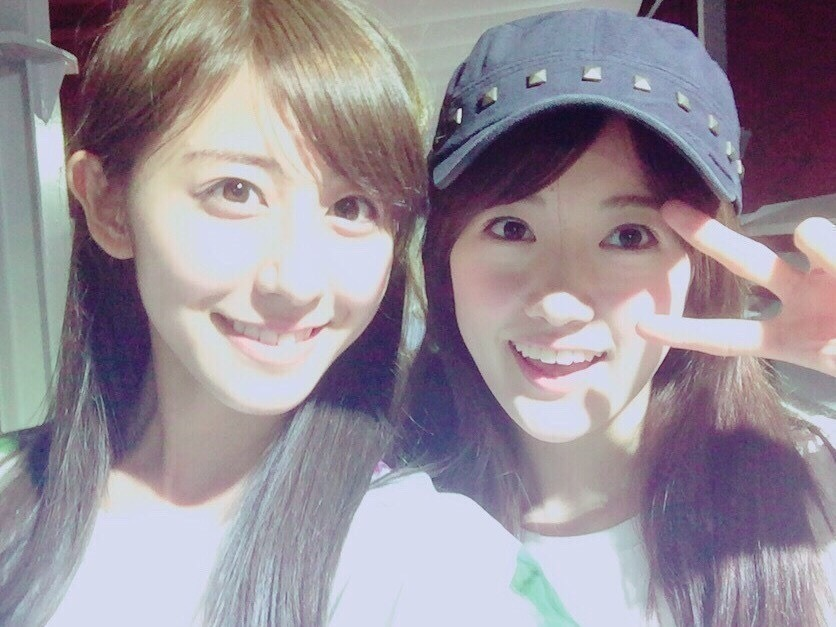
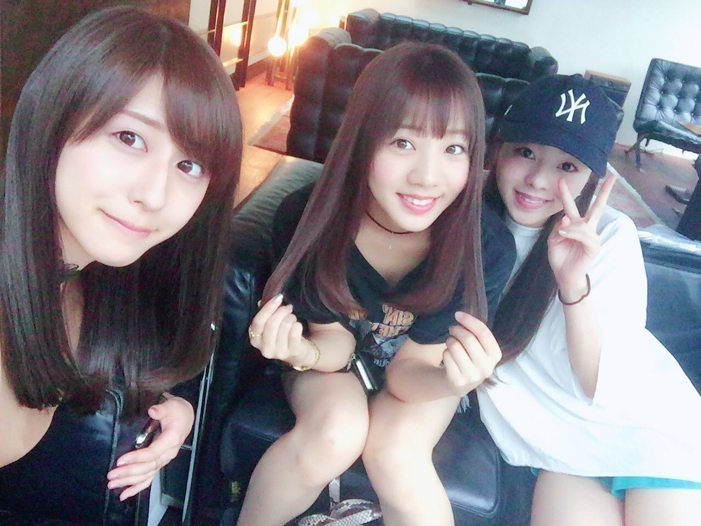
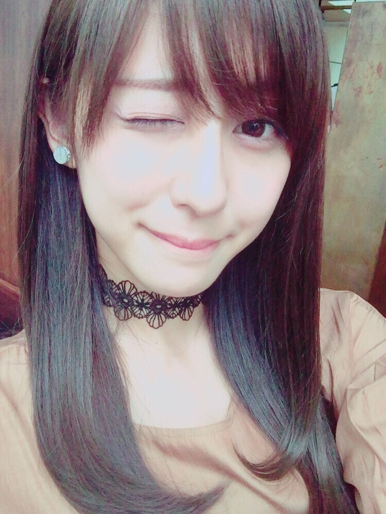
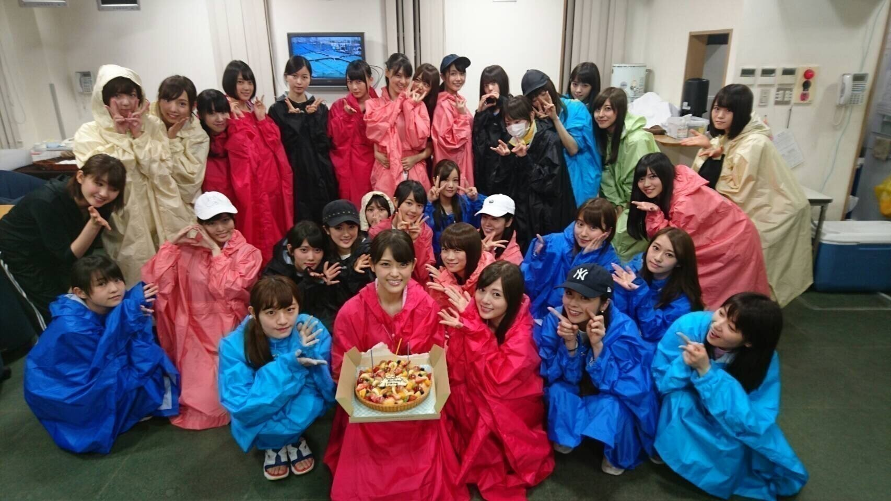

| 2016/08 28 Sun | 斎藤ちはる 明日から。(´>∀<｀)ゝ |
ちはるーむへようこそ！

ちまと！！
雨で前髪濡れちゃった( ;o; )( ;o; )

愛未と真洋と♡
愛未が髪の毛アピールしてる！！

神宮の為に美容院行って
髪の毛を綺麗にしたよ～♡
またしてもブルージュ。
色はブルージュに落ち着いたかな！

最後に、さゆりんの誕生日を
お祝いしたよ～！！
おめでとう(﹡ˆ ˆ﹡)
みんなそれぞれカッパちゃん。
-------------------------♡
♬ ChihaMusic
「MINT」Suchmosさん
懐かしい感じはするのに
どこかオシャレ。
そして聴きやすくて心地いい。
もっとSuchmosさんの事知りたい！
と思う今日この頃。
声も好きだな～
今日は短めでごめんなさい( ;o; )！！
明日からの神宮バースデイライブ
全員で！頑張るからね！！
雨が降りませんように。
皆さんが風邪引きませんように。
誰も怪我しませんように。
楽しみます♡
あ、皆さんカッパは必需品！
そして長靴や濡れたものを拭くタオルも
一応あったほうがいいかも♪
そして神宮に来れない方は
明日18:00～文化放送にて
「乃木坂46の、の！」に出演するので
聞き逃さないでくださいね(﹡ˆ ˆ﹡)
おやすみ～！
斎藤ちはる